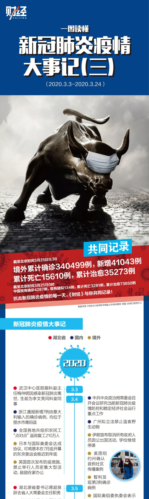
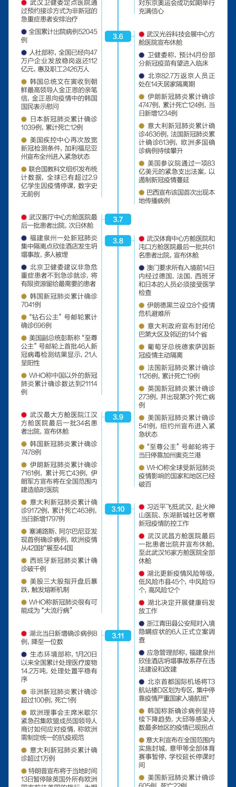
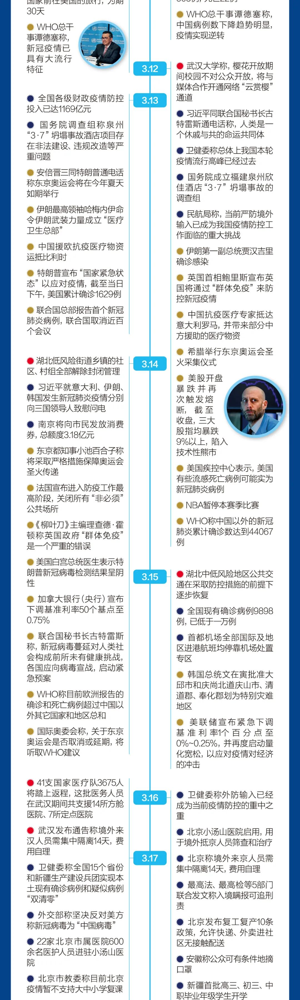
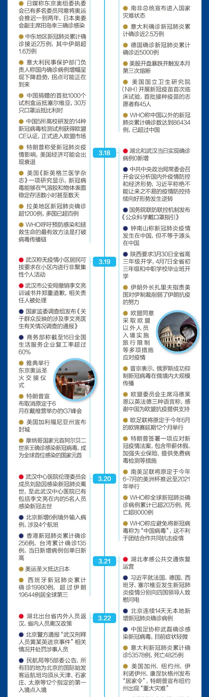
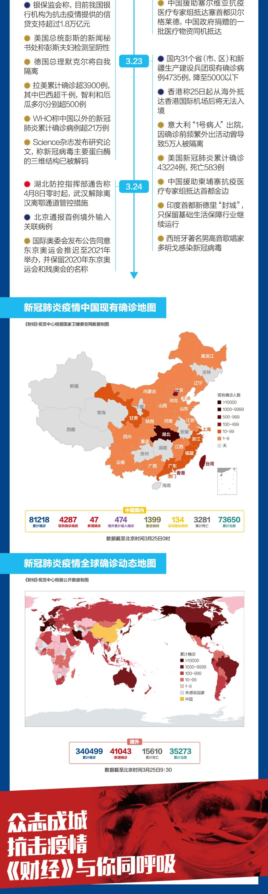

新冠肺炎疫情大事记（上篇）
原文链接 备份链接 文 |《财经》记者 李斯洋 根据公开资料整理 制图 | 财经视觉中心 抗击新冠肺炎疫情的每一天，《财经》与你共同记录！ ▲点击图片查看更多疫情报道 责编 | 蒋丽 lijiang@caijing.com.cn 本文 …

文 |《财经》记者李斯洋根据公开资料整理
制图 |《财经》视觉中心


抗击新冠肺炎疫情的每一天，《财经》与你共同记录！

▲点击图片查看更多疫情报道
责编 | 阮璐阳 luyangruan@caijing.com.cn
本文为《财经》杂志原创文章，未经授权不得转载或建立镜像。如需转载，请在文末留言申请并获取授权。
原文链接 备份链接 文 |《财经》记者 李斯洋 根据公开资料整理 制图 | 财经视觉中心 抗击新冠肺炎疫情的每一天，《财经》与你共同记录！ ▲点击图片查看更多疫情报道 责编 | 蒋丽 lijiang@caijing.com.cn 本文 …
原文链接 备份链接 参与《财经》调研的多位企业人士表示，希望政府的金融扶持能更好地惠及小微企业 文 | 《财经》记者 周源 编辑 | 谢丽容 进入2020年3月以来，中国的新冠肺炎疫情蔓延已得到了有力控制，新增确诊和新增疑似病例呈逐日大幅 …
原文链接 备份链接 要高度重视科学教育和科学思维的培养。面对复杂世界的未知难题，碰到一个像新冠肺炎这样的新问题，我们得学会首先从科学的角度想，它是怎么一回事，然后怎样按照科学规律去应对和预测 新冠病毒模型。图片来源/美国CDC 文 |《财 …
原文链接 备份链接 纽约州计划在纽约市曼哈顿西区的贾维茨会议中心建造一所方舱医院，大约能提供1000个床位。加州和华盛顿州也会建设类似的医院。 文 | 刘朝晖 中国的方舱医院已经休舱，意大利、西班牙、美国、俄罗斯、伊朗等许多国家结合本国国 …
原文链接 备份链接 美国可能会成为新冠病毒全球大流行的下一个“震中”。 疫情快速蔓延让美国各大学感受到了巨大的健康威胁和经济寒意，美国高等教育可能因此发生巨大改变 文 |《财经》特派记者 金焱 发自华盛顿 编辑 | 苏琦 美国新冠病毒疫 …